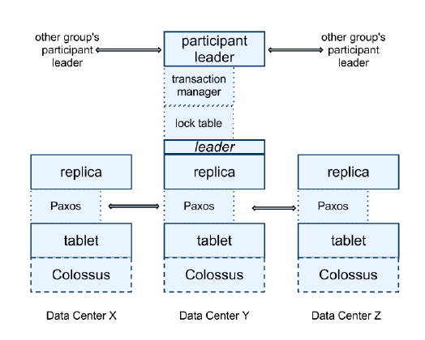

Spanner: Google’s Globally-Distributed Database
Google’s scalable, multi-version, globally-distributed and synchronously-replicated database.
Introduction
- Bigtable is hard to use for applications need complex, evolving schemas or strong consistency in wide-area replication, so Spanner evolved into a temporal, multi-version, semi-relational database.
- With a new TrueTime API that exposes clock uncertainty, Spanner assigns globally-meaningful commit timestamp to even distributed transactions.
- Spanner shards data across many sets of Paxos state machines in data centers spread all over the world.
System Architecture
- A Spanner zone has one zonemaster and many spanservers. The former assigns data to spanservers; the latter serve data to clients.
- A spanserver is responsible for 100~1000 tablets. Each tablet contains a bag of mappings from multiple partitions of the row space(data colocation). A tablet's state is stored in a set of B-tree like files and a write-ahead log on Colossus.
- A spanserver implements a Paxos state machine on each tablet; each Paxos state machine stores metadata and log in corresponding tablet.
- At every replica that is a leader, each spanserver implements a lock table and a transaction table to support distributed transactions(two-phase commit on mutliple Paxos groups).

TruetTme
- Main method returns an interval [earliest, latest] that is guaranteed to contain the absolute time when is invoked. and are convenience wrappers.
- TrueTime uses two forms of time references, GPS and atomic clocks, as they have different failure modes.
- TrueTime is implemented by a set of time master machines per data center and a time slave daemon per machine.
- Each daemon polls a variety of masters, apply Marzullo's algorithm to detect liars and synchronize the local machine clock to non-liars.
- Between synchronizations, a daemon advertises a slowly increasing time uncertainty (average 4ms in production) derived from worst-case local clock drift, time master uncertainty and communication delay to the time masters.
Concurrency Control
- Spanner supports read-write transactions, read-only transactions and snapshot reads. Read-only transactions and snapshot reads execute at a specific timestamp without locking.
- Spanner maintains following invariants:
- disjointness:* within a Paxos group, each Paxos leader's lease interval is disjoint from every other leader's.
- monotonicity: within a Paxos group, Paxos writes have monotonically increasing timestamp.
- external consistency: if the start of a transaction occurs after the commit of a transaction , then the commit timestamp of must be greater than the commit timestamp of .
- For RW transactions, the coordinator assigns a commit timestamp no later than computed after receiving the commit request, and waits until is true to apply the commit("commit wait").
- For RO transactions and snapshot reads, every replica tracks for the maximum at which the replica is up-to-date, which depends on the Paxos state machine and if there are prepared but not committed transactions.